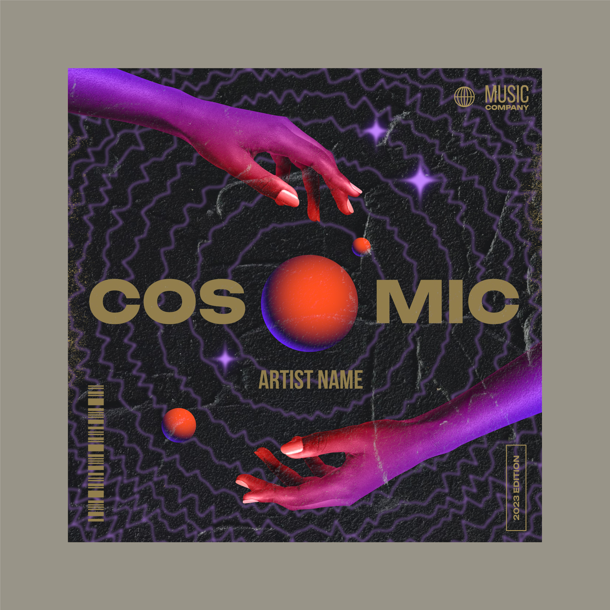
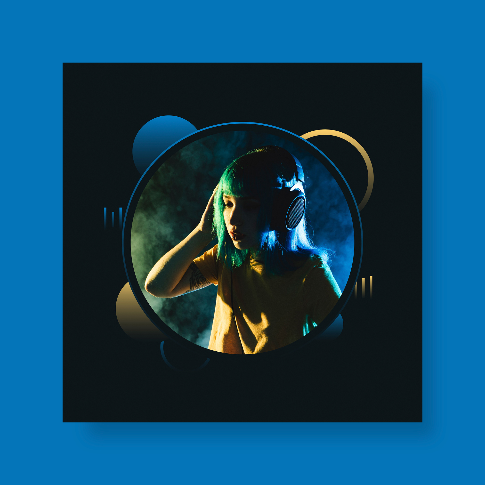

BERLIN_KICK_042.wav
GONZALO MD88 KICK · TECHNO · ONE SHOT
138 BPMC00:02
1 DEMO
 CREATOR / 001
CREATOR / 001CREATOR PROFILE DEMO
BERLIN TECHNO
PRODUCER / SOUND DESIGN / EDUCATION
Productor y artista. Una propuesta centrada en el techno, la creación de grooves y la búsqueda de una identidad sonora propia.
CREATOR / 001 · BERLIN TECHNO
SOUNDS / ONE-SHOTS / LOOPS
GONZALO MD88 KICK · TECHNO · ONE SHOT
138 BPMC00:02
1 DEMO
GONZALO MD88 PERCUSSION · TECHNO · ONE SHOT
140 BPMAm00:03
1 DEMO
GONZALO MD88 SYNTH · TECHNO · ONE SHOT
126 BPMFm00:04
2 DEMO
PACKS / PRESETS / MIDI

PACK DEMO
Samples y loops de percusión industrial.
CRÉDITOS DEMO
PRESET DEMO
Presets y texturas para producción techno.
CRÉDITOS DEMO
MIDI DEMO
Secuencias MIDI para grooves y arreglos.
CRÉDITOS DEMOLEARN WITH GONZALO / 03


 FORMATION / OPCIONAL
FORMATION / OPCIONALFORMATION / COLLECTION STRUCTURÉE
Una colección opcional de Tutorials y Masterclasses creada por el Creator.
ARTIST / RELEASES

Cover placeholder · sin audio ni metadatos de release.

Cover placeholder · sin audio ni metadatos de release.

Cover placeholder · sin audio ni metadatos de release.
SESSIONS / 1:1
Sesiones individuales de producción musical adaptadas a tu nivel, tus objetivos y tu identidad artística.
RESERVAR SESIÓNFundamentos de Ableton Live y producción techno paso a paso.
Diseño de sonidos, percusiones, bajos, presets y templates.
Feedback de proyecto y técnicas de mezcla y mastering.
IDENTITY / PROCESS
Gonzalo MD88 desarrolla una propuesta centrada en el techno, la creación de grooves y la búsqueda de una identidad sonora propia.
Su trabajo combina producción, experimentación y transmisión de conocimientos para ayudar a otros artistas a comprender mejor su proceso creativo.
CREATOR / 001
CREATOR PROFILE DEMO
BERLIN TECHNO
PRODUCER / SOUND DESIGN / EDUCATION
Productor y artista. Una propuesta centrada en el techno, la creación de grooves y la búsqueda de una identidad sonora propia.
CREATOR / 001 · BERLIN TECHNO
SOUNDS / ONE-SHOTS / LOOPS
GONZALO MD88 KICK · TECHNO · ONE SHOT
138 BPMC00:02
1 DEMO
GONZALO MD88 PERCUSSION · TECHNO · ONE SHOT
140 BPMAm00:03
1 DEMO
GONZALO MD88 SYNTH · TECHNO · ONE SHOT
126 BPMFm00:04
2 DEMO
LEARN WITH GONZALO / 03
FORMATION / OPCIONALFORMATION / COLLECTION STRUCTURÉE
Una colección opcional de Tutorials y Masterclasses creada por el Creator.
01
PRIVATE LESSONS / 01
Sesiones individuales de producción musical adaptadas a tu nivel, tus objetivos y tu identidad artística.
01
> MÚSICA Y LANZAMIENTOS
Escucha una selección de EPs, descubre cada proyecto y accede a las plataformas oficiales para comprar o seguir los lanzamientos.
00 PROYECTOS · 00 TRACKS
Aprende a utilizar Ableton Live desde cero, instala y domina tus plugins, comprende los fundamentos de la producción musical y crea tus primeros temas techno paso a paso.
02
Diseña tus propios sonidos, percusiones y bajos. Aprende a crear presets, templates y herramientas personales para trabajar más rápido y desarrollar una identidad sonora propia.
03
Analizamos tus proyectos para mejorar la calidad de tus producciones. Aprende mezcla y mastering con técnicas y herramientas profesionales para conseguir un sonido potente y competitivo.
07
MUSIC / ARTIST PROJECTS
Sample packs, Ableton racks y formaciones diseñadas para mejorar tu flujo de trabajo, desarrollar tu sonido y producir con mayor libertad.
00 PRODUCTOS DIGITALES
04
EL ARTISTA
Gonzalo MD88 desarrolla una propuesta centrada en el techno, la creación de grooves y la búsqueda de una identidad sonora propia.
Su trabajo combina producción, experimentación y transmisión de conocimientos para ayudar a otros artistas a comprender mejor su proceso creativo.
05
CONTACTO
Reserva una clase privada, solicita información o presenta tu proyecto.